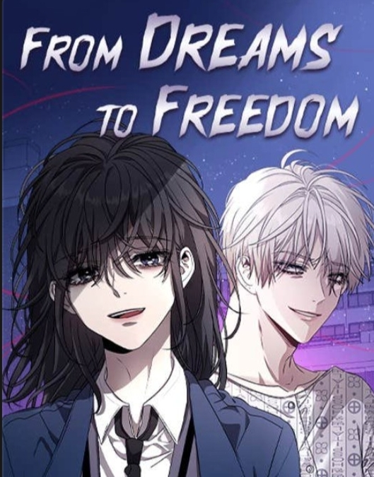

Koleksi Komik Favorit
| Judul | Pengarang | Genre | Status |
|---|---|---|---|
| I Wanna Be U | Sam | Fantasi, Pengkhianatan, Pertukaran Darah | Ongoing |
| Rumor Has It | Noey | Romantis, Perundungan, Keluarga | Tamat |
| From Dreams to Freedom | 2L | Romantis, Perundungan, Keluarga | Tamat |

Tambah Komik Favorit
Tentang Saya
Halaman web ini dibuat untuk mendokumentasikan berbagai komik favorit yang saya baca dan sukai. Melalui halaman ini, judul, pengarang, genre, serta status komik dapat diakses dengan mudah dan terstruktur.